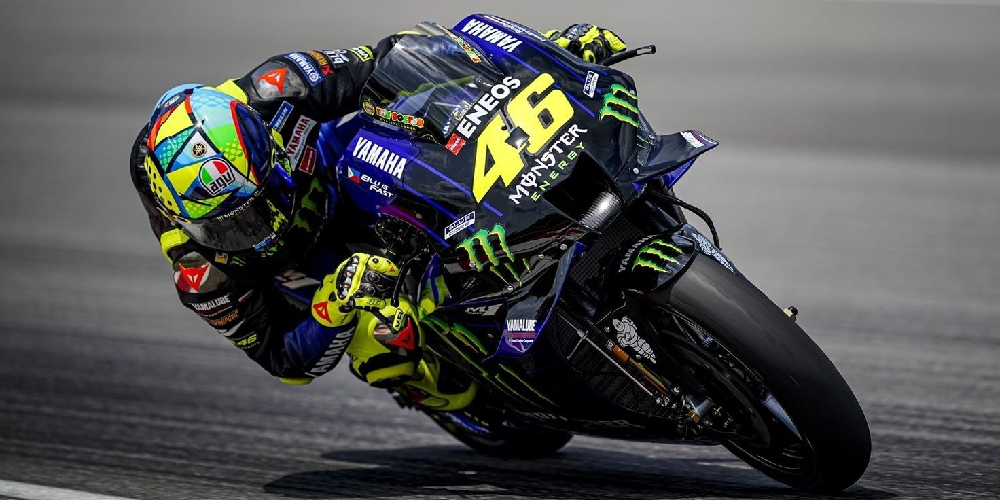

VALENTINO ROSSI • BROJ 46
Tehnologija
u svetu MotoGP-a
Na primeru motocikala koje je vozio Valentino Rossi može se videti koliko su se tokom godina razvijali aerodinamika, elektronika i materijali.
Istraži tehnologiju →46
IZA VIZIRA
Više od trke
MotoGP motocikli nisu serijski modeli, već prototipovi napravljeni isključivo za takmičenje. Valentino Rossi je svojim dugim prisustvom u prvenstvu vozio motocikle iz više različitih tehnoloških era.
Razvoj na stazi često utiče i na tehnologiju budućih drumskih motocikala.
Aerodinamika
Krilca i oblik oplate pomažu stabilnosti pri ubrzanju i kočenju.
Elektronika
Senzori i kontrolni sistemi prate ponašanje motocikla u realnom vremenu.
Materijali
Karbon, titanijum i legure smanjuju masu i podnose velika opterećenja.